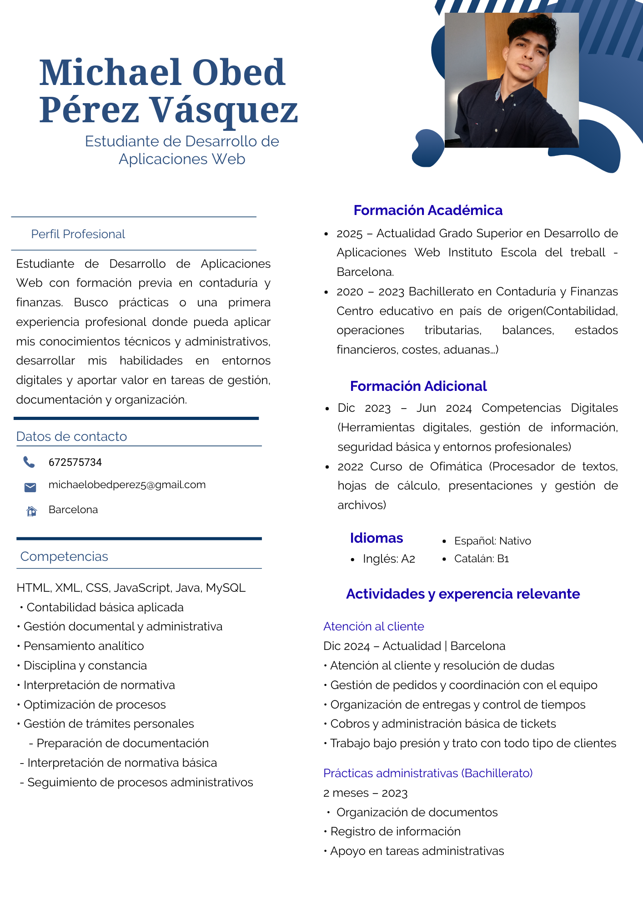

¿Quién soy?
Soy Michael Obed Pérez, estudiante que vive y estudia en Barcelona, donde estoy construyendo mi camino académico y profesional dentro del ámbito técnico y administrativo. Mi recorrido ha estado marcado por la adaptación, el esfuerzo y la constancia, cualidades que me han ayudado a superar barreras lingüísticas, burocráticas y personales mientras me integro en el sistema educativo catalán.
Tengo un perfil analítico, disciplinado y orientado a la mejora continua. Me interesan especialmente las áreas de programación, administración, finanzas y gestión, porque combinan lógica, estructura y toma de decisiones, tres aspectos que encajan con mi manera de pensar y trabajar.
Me gusta aprender con profundidad, entender el porqué de las cosas y construir procesos claros y eficientes. Soy una persona resiliente, capaz de mantener el enfoque incluso en momentos de presión, y siempre busco crecer tanto a nivel personal como profesional. Esta página web es una muestra de mi progreso y de mi compromiso con mi formación.
¿Qué encontrarás aquí?
- ▸ Presentación personal – ¿Quién soy?
- ▸ Perfil profesional resumido
- ▸ DAFO personal-profesional
- ▸ Competencias clave analizadas
- ▸ Puntos fuertes y áreas de mejora
- ▸ Competencia principal destacada
- ▸ Test de intereses profesionales
- ▸ Gráfico de intereses interpretado
- ▸ Sección Soy PRO (versión profesional)
- ▸ Conclusiones y contacto
Perfil Personal
DAFO Personal-Profesional
Fortalezas
- Gran capacidad de adaptación a nuevos entornos académicos, culturales y laborales.
- Persistencia y constancia incluso en situaciones de presión o carga elevada.
- Resistencia al estrés, manteniendo el enfoque y la calidad del trabajo.
- Actitud participativa y proactiva, aportando ideas y buscando siempre mejorar.
- Capacidad para compaginar trabajo y estudios, demostrando responsabilidad, madurez y compromiso.
- Determinación para avanzar a pesar de las dificultades, manteniendo una mentalidad de crecimiento.
Debilidades
- Tendencia a ser reservado en entornos nuevos, lo que puede retrasar la comunicación inicial hasta sentir confianza.
- Bloqueo ocasional cuando el ambiente de trabajo carece de claridad, estructura o apoyo por parte de superiores.
- Dificultad para adaptarse cuando no existen expectativas definidas, ya que prefiero trabajar con orden y objetivos concretos.
- Perfeccionismo y autoexigencia elevados: puedo dedicar más tiempo del necesario, pero esto refleja mi compromiso por entregar trabajos de calidad y mi responsabilidad profesional.
- Exigencia personal alta, que a veces me lleva a presionarme más de lo necesario para cumplir con mis propios estándares.
Oportunidades
- Acceso a formación técnica y profesional en Barcelona, con recursos y centros especializados.
- Alta demanda de perfiles con conocimientos en programación, administración y finanzas.
- Posibilidad de realizar prácticas profesionales que permitan adquirir experiencia real.
- Entorno multicultural que facilita el aprendizaje, la adaptación y la creación de contactos.
- Capacidad de diferenciarse combinando habilidades técnicas con competencias administrativas.
Amenazas
- Competencia elevada en el mercado laboral, especialmente en perfiles técnicos emergentes.
- Exigencia de idiomas (castellano, catalán e inglés) en muchas ofertas de trabajo.
- Ritmo académico acelerado que puede generar estrés si no se gestiona adecuadamente.
- Incertidumbre sobre cambios en el sistema educativo o en el mercado laboral.
- Riesgo de desmotivación si los resultados no llegan tan rápido como el esfuerzo invertido.
Resumen del Test de Competencias Clave
Competencias destacadas
El test refleja que poseo un nivel alto en iniciativa, orientación al logro, orden y calidad, dirección de personas, pensamiento conceptual, creatividad y autocontrol. Estas competencias muestran que soy una persona capaz de actuar con rapidez, mantener el foco en los objetivos y tomar decisiones incluso en situaciones de presión. Además, combino pensamiento analítico con creatividad, lo que me permite aportar soluciones innovadoras sin perder la estructura ni el rigor.
Puntos fuertes
Destaco por asumir la iniciativa en momentos clave, mantener la excelencia como estándar y trabajar con un alto nivel de detalle y precisión. Mi capacidad para mantener la calma bajo presión, gestionar el estrés y coordinar a otras personas me permite funcionar bien en entornos exigentes. También tengo facilidad para comprender problemas complejos, identificar patrones y proponer soluciones claras y efectivas, lo que refuerza mi perfil técnico y organizativo.
Áreas de mejora
En ocasiones puedo ser reservado al inicio y me cuesta valorar ciertas opiniones ajenas si no están bien fundamentadas. También puedo bloquearme cuando el entorno carece de claridad o estructura, ya que trabajo mejor con objetivos definidos y un ambiente organizado. Mi perfeccionismo y autoexigencia, aunque forman parte de mi identidad profesional, pueden llevarme a dedicar más tiempo del necesario a algunas tareas, especialmente cuando busco un resultado impecable.
Competencia principal
La competencia más destacada del test es la dirección de personas. Esto indica que tengo facilidad para marcar objetivos, exigir rendimiento, establecer límites y asegurar que las tareas se cumplan correctamente. Mi estilo combina firmeza, claridad y responsabilidad, adaptándose a las necesidades del equipo y del contexto.
Perfil Formativo
Formación Académica
Grado Superior en Desarrollo de Aplicaciones Web (DAW)
2025 – Actualidad · Barcelona
Formación técnica en programación, bases de datos, desarrollo web y gestión digital.
Bachillerato en Contaduría y Finanzas
2020 – 2023
Formación sólida en administración, contabilidad, análisis financiero y gestión documental.
Competencias Técnicas
- HTML, CSS y JavaScript
- MySQL y bases de datos relacionales
- Gestión de documentación digital
- Organización y procesos administrativos
- Ofimática avanzada
- Pensamiento analítico y estructurado
Formación Complementaria
Actualmente estoy explorando opciones de formación complementaria en áreas como programación avanzada, diseño web funcional, gestión digital y administración. Esta sección se actualizará conforme se incorporen nuevos cursos, certificaciones o talleres que refuercen mi perfil técnico y organizativo.
Objetivos Formativos
- Finalizar el ciclo de DAW con un perfil técnico sólido.
- Mejorar en programación web y bases de datos.
- Integrar mis conocimientos administrativos con el desarrollo web.
- Prepararme para prácticas profesionales en empresas digitales.
- Construir un portafolio propio que refleje mi evolución.
Perfil Profesional
Salidas Profesionales – Desarrollo Web (DAW)
- Desarrollador/a web
- Programador/a web
- Programador/a multimedia
- Técnico/a en mantenimiento de sitios web
- Técnico/a en integración de datos
- Técnico/a de testing
- Administrador/a básico de sistemas web
- Gestor/a de contenidos web
- Asistente en proyectos digitales
- Auxiliar en departamentos TIC
Especialización Profesional de Interés
Me gustaría especializarme en desarrollo web orientado a empresas...
Estrategias para conseguirlo:
- Finalizar el ciclo de DAW.
- Mejorar HTML, CSS, JS y bases de datos.
- Realizar prácticas en una empresa digital.
- Hacer cursos de UX/UI y gestión digital.
- Crear un portafolio propio.
- Buscar un puesto júnior en desarrollo web.
Ofertas Laborales
Oferta 1: Desarrollador/a Web Júnior
Empresa: WebNova Solutions – Barcelona
- Creación de webs corporativas
- HTML, CSS, JS, MySQL
- Trabajo en equipo
Análisis: Encaja con mi perfil.
Oferta 2: Assistant Web Developer
Empresa: DigitalWave Agency – Barcelona
- Soporte en desarrollo de landing pages
- Maquetación con HTML, CSS y frameworks
- Gestión de contenidos en WordPress
- Optimización básica
Análisis: Ideal para adquirir experiencia real.
Correo de Presentación
Mostrar correo
Asunto: Candidatura al puesto de [Nombre del puesto]
Estimados/as señores/as:
Me pongo en contacto con ustedes para expresar mi interés en la oferta de [nombre del puesto]. Soy estudiante de DAW y tengo formación en contaduría, lo que me permite combinar desarrollo web con organización y gestión digital.
Me interesa especialmente crear páginas web funcionales y participar en proyectos digitales dentro de empresas. Adjunto mi currículum para su revisión.
Atentamente,
Michael Obed Pérez Vásquez
Barcelona
Mi Currículum
 Ver / Descargar CV en PDFSoy PRO
Habilidades Profesionales
Destaco por mi capacidad para trabajar con precisión, mantener la calma bajo presión y adaptarme rápidamente a nuevos entornos. Combino habilidades técnicas con competencias administrativas, lo que me permite aportar soluciones completas, organizadas y eficientes.
- Responsabilidad y compromiso
- Organización de procesos y documentación
- Pensamiento analítico
- Comunicación clara
- Trabajo en equipo
Logros y Experiencia
Mi experiencia en atención al cliente y administración me ha permitido desarrollar habilidades prácticas que aplico también en el ámbito técnico. He demostrado constancia, disciplina y capacidad para superar retos.
- Atención al cliente bajo presión
- Gestión administrativa real
- Adaptación al sistema educativo de Barcelona
- Proyectos web en DAW
Mi Valor Diferencial
Mi perfil combina programación y administración. Esto me permite entender tanto la parte técnica como la organizativa de un proyecto, aportando soluciones completas, estructuradas y eficientes.
Además, mi disciplina y mentalidad de mejora continua me convierten en una persona capaz de crecer rápidamente en entornos profesionales.
Visión Profesional
Aspiro a desarrollarme en el ámbito digital, combinando mis conocimientos técnicos con mi experiencia administrativa. Quiero formar parte de proyectos que aporten valor real, donde pueda crecer, aprender y contribuir con soluciones eficientes.
Me motiva seguir formándome, asumir nuevos retos y construir una trayectoria sólida en el sector tecnológico y administrativo.